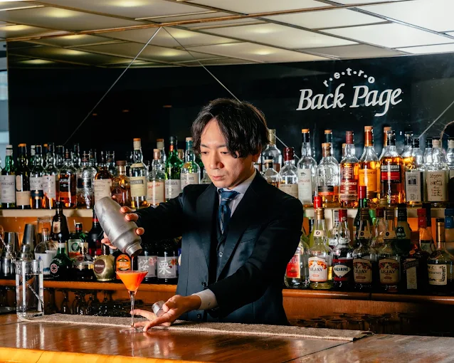
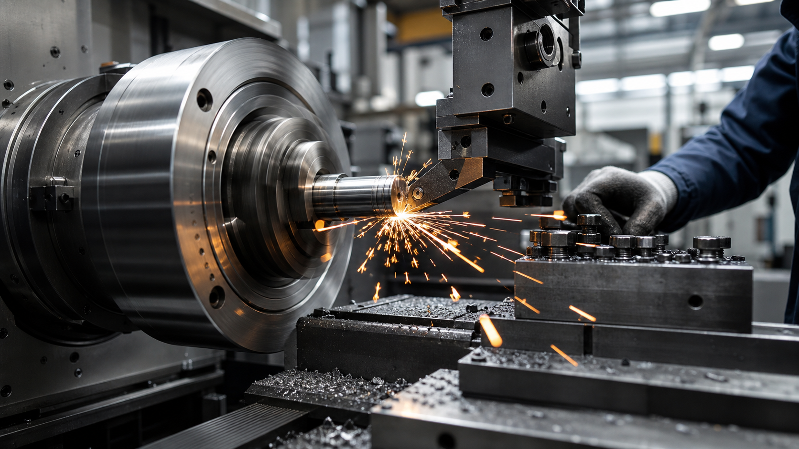
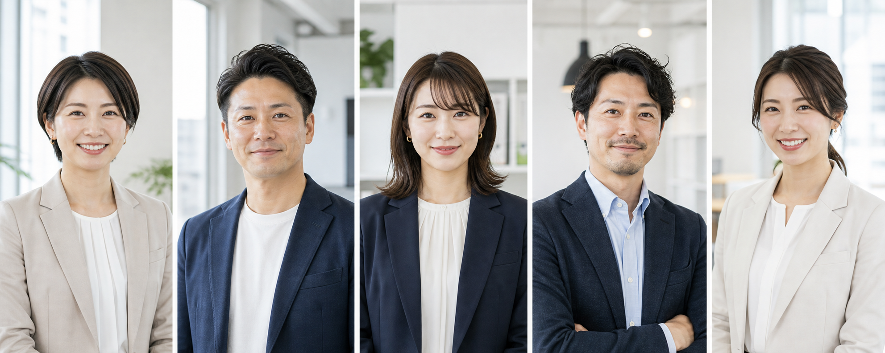

飲食・店舗
老舗ダイニングバー｜貸切・問い合わせ導線の改善
貸切予約・問い合わせ導線を見直し、予約フォームの最適化とコンテンツ設計を刷新。
わかりやすい導線で、問い合わせ数が大きく増加しました。
- 問い合わせ数
- 23件 → 106件
- 前月比
- +360.9%
- メール
- 45件
- 電話
- 25件
- 見積
- 36件
- □課題整理目的と課題を丁寧にヒアリング
- ◎導線改善問い合わせ導線をシンプルに
- ⚙公開後も運用アクセス解析と改善を継続
採用・集客・営業の課題に合わせて、
伝わり方を整えた事例をご紹介します。

貸切予約・問い合わせ導線を見直し、予約フォームの最適化とコンテンツ設計を刷新。
わかりやすい導線で、問い合わせ数が大きく増加しました。

採用仕事内容や魅力を整理し、応募につながる採用ページへ刷新しました。
応募数

集客・LPLINE登録から来店までの導線を最適化。リピーターが増えました。
再来店率
専門性と実績を整理し、安心して相談できるサイトにリニューアル。
相談数ご家族にも伝わる言葉づかいと情報設計で、問い合わせが増えました。
問い合わせ宴会・貸切専用ページを新設し、スムーズな予約・問い合わせを実現。
団体予約企業の強みを伝える構成とデザインで、商談化率が向上しました。
商談化率丁寧なヒアリングで、企業やお店の強み・価値を一緒に言語化します。
誰に、何を、どう伝えるかを設計し、伝わる構成とデザインにします。
問い合わせや応募につながる導線を、シンプルで使いやすく整えます。
公開後もデータを見ながら改善を重ね、成果を伸ばし続けます。
相談しやすく、何から変えるべきかが明確になった
建設会社 人事担当 A社 様
採用でもお客様対応でも、説明しやすくなった
美容サロン オーナー B社 様公開後も一緒に見てくれるので安心です
士業事務所 代表 C社 様制作実績
400社以上相談・提案
すべて無料最短
3営業日でご提案保守・運用で
公開後もサポートしつこい営業なし・相談のみOK・写真や原稿がなくても大丈夫